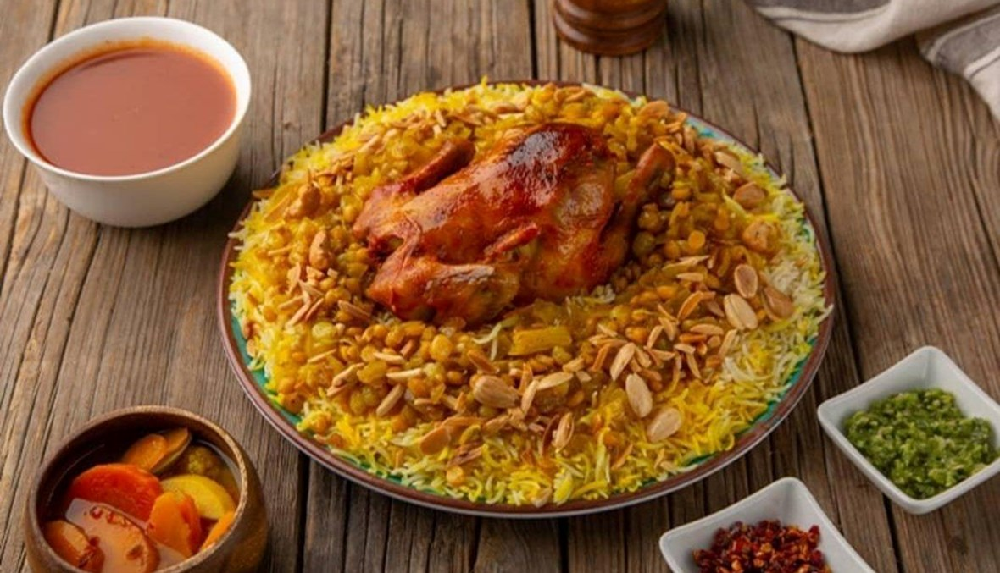

Kuwaiti Chicken Machboos

Ingredients:
- 2 cups basmati rice
- 500g chicken, cut into pieces
- 2 large onions, finely chopped
- 3 tomatoes, chopped
- 3 cloves garlic, minced
- 1 tablespoon ginger, grated
- 1 large carrot, grated
- 1 large potato, diced
- 1/4 cup vegetable oil
- 1/4 cup ghee (clarified butter)
- 1 teaspoon ground cumin
- 1 teaspoon ground coriander
- 1 teaspoon ground cinnamon
- 1 teaspoon ground cardamom
- 1 teaspoon ground turmeric
- 1 teaspoon ground black lime (loomi) or use lime zest
- 2-3 dried black limes (loomi)
- 4 cups chicken broth
- Salt and pepper to taste
Instructions:
- Rinse the basmati rice under cold water until the water runs clear. Soak the rice in water for about 30 minutes, then drain.
- In a large pot, heat vegetable oil and ghee over medium heat. Add chopped onions and sauté until golden brown.
- Add minced garlic, grated ginger, and chopped tomatoes. Cook until the tomatoes are soft.
- Add chicken pieces to the pot and season with cumin, coriander, cinnamon, cardamom, turmeric, ground black lime, salt, and pepper. Stir well.
- Cook the chicken until browned on all sides.
- Add grated carrot and diced potatoes. Stir and cook for a few minutes.
- Pour in chicken broth and add dried black limes. Bring to a boil, then reduce heat to low.
- Cover the pot and let it simmer until the chicken is tender.
- Meanwhile, in a separate pot, bring water to a boil. Add salt and the soaked, drained rice. Cook until almost done.
- Drain the rice and add it to the pot with the chicken. Mix gently to combine.
- Cover the pot and let it cook on low heat until the rice is fully cooked and absorbs the flavors.
- Once done, fluff the rice with a fork. Serve hot, garnished with fried onions if desired.
Ramen

Ingredients:
- 2 packs of ramen noodles
- 4 cups chicken or vegetable broth
- 1 cup sliced mushrooms
- 2 cups baby spinach
- 3 tablespoons soy sauce
- 2 tablespoons miso paste
- 1 tablespoon sesame oil
- 1 tablespoon grated ginger
- 2 cloves garlic, minced
- 1 green onion, chopped (for garnish)
- Sesame seeds (for garnish)
- Boiled eggs (optional, for topping)
Instructions:
- Cook the ramen noodles according to the package instructions. Drain and set aside.
- In a pot, bring the chicken or vegetable broth to a simmer.
- Add sliced mushrooms, baby spinach, soy sauce, miso paste, sesame oil, grated ginger, and minced garlic to the pot. Simmer for about 5-7 minutes until the vegetables are tender.
- Divide the cooked ramen noodles into serving bowls.
- Ladle the hot broth with vegetables over the noodles.
- Garnish with chopped green onions, sesame seeds, and boiled eggs if desired.
- Serve hot and enjoy your delicious bowl of ramen!
Pancakes

Ingredients:
- 1 cup all-purpose flour
- 2 tablespoons sugar
- 1 teaspoon baking powder
- 1/2 teaspoon baking soda
- 1/4 teaspoon salt
- 3/4 cup buttermilk
- 1/4 cup milk
- 1 large egg
- 2 tablespoons unsalted butter, melted
- 1 teaspoon vanilla extract
- Butter or oil for cooking
- Maple syrup for serving
- Fresh berries (optional, for topping)
Instructions:
- In a large bowl, whisk together the flour, sugar, baking powder, baking soda, and salt.
- In another bowl, whisk together the buttermilk, milk, egg, melted butter, and vanilla extract.
- Pour the wet ingredients into the dry ingredients and gently stir until just combined. It's okay if there are some lumps.
- Heat a griddle or non-stick skillet over medium heat and lightly grease with butter or oil.
- Pour 1/4 cup of batter onto the griddle for each pancake.
- Cook until bubbles form on the surface of the pancakes, then flip and cook until the other side is golden brown.
- Repeat with the remaining batter.
- Serve the pancakes warm with maple syrup and fresh berries if desired.